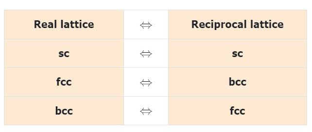

固体物理（三）Crystal Lattices and X-ray Diffraction
Crystal Lattice
Unit Cells
Ions/atoms in a crystal are not randomly distributed, but form a periodic array -$lattice$, which can be divided into the repeating unit: $unit \ cells$.
The dimension of the unit cell: a,b and c (length) and α, β and γ (angles) between a, b and c are lattice constants/parameters.
It is also important how many atoms are in the unit cell and where they sit.
Basis
A unit cell can contain a single atom or atoms in a fixed arrangement – a $basis$. Each basis is associated with a $lattice \ point$.
If there is only one lattice point in the cell, it is called a $primitive \ cell$ – the smallest repeating unit of the lattice.
By convention, a unit cell is chosen for the convenience of description: orthogonal lattice vectors, high symmetry, …
Lattice vectors
Mathematically, the position of an atom/ion is indicated by a lattice vector:
where $n_x$, $n_y$ and $n_z$ are integers if atoms are at the corners of the unit cells. They can also be fractional.
Symmetry
Symmetry : A crystal experiences an operation. If the pattern of the lattice is not changed, the crystal is said to have the corresponding symmetry.
Translational symmetry: translation operation by a translation vector $\vec {T}= n_x\vec {a}+n_y\vec {b}+n_z\vec {c}$, where $n_x$, $n_y$ and $n_z$ are integers.
Rotation symmetry: rotation operation by 2π/n (rad) about an axis.
From symmetry, we can have:
- 7 crystal families
- 14 Bravais lattice
- 32 point groups
- 230 space groups
Miller Indices （密勒指数）
blue: the reciprocals of the fractional intercepts which the plane makes with the crystallographic axes (by William Miller)
Steps: Beginning at the origin 000, how far do we go along each lattice vector a,b,c before we reach the closest plane (not pass the origin)? Take the reciprocal of the distance, which gives Miller indices h, k, l.
X-ray diffraction
Bragg’s Law （布拉格定理）
Developed by British physicists Sir W.H. Bragg and his son Sir W.L. Bragg in 1913. Won Nobel Prize in physics in 1915 for their work in determining crystal structures beginning with NaCl, ZnS and diamond.
Can be applied to other diffraction methods with short wavelengths: ions, electrons, and neutrons.
To determine d, we need precise information on wavelength. How to achieve X-rays with single wavelength?
X-ray diffraction by a single atom
- Incident X-ray is a plane wave: $Ae^{i(\vec k \cdot \vec r-{\omega}t)}$, $k=2\pi/{\lambda}$(wave vector), and $\vec k$ points towards propagation direction: $\vec p= \hbar \vec k$
- Relaitve amplitude of a wave (X-ray, electron, neutron) scattered by one isolated atom is described by the Atomic Scattering Factor $f_{atom}$ :
- For x-ray scattering, ${\rho}(\vec r)$ is the electron charge density about nucleus.

X-ray diffraction (XRD) by 2 atoms
Reciprocal Lattice
Each point in the reciprocal lattice corresponds to a set of lattice planes (hkl) in the crystal lattice.
- The direction of the reciprocal lattice vector corresponds to the normal of the lattice planes.
- The magnitude of the reciprocal lattice vector is equal to the reciprocal of the interplanar spacing in the crystal lattice.
简单立方格子的倒格子还是简单立方格子
体心立方格子的倒格子是面心立方格子
面心立方格子的倒格子是体心立方格子
简单六角格子的倒格子是简单六角格子

Ewald Sphere in Reciprocal Lattice
From the origin of the reciprocal lattice, track back along the incident beam by $2\pi /{\lambda}$ to find the origin of the Ewald sphere – that’s where the crystal is.
Draw a sphere of radius $2\pi /{\lambda}$ around the center – Ewald sphere.
Back to XRD, now by a Unit Cell
- Relaitve amplitude of a wave (X-ray, electron, neutron) scattered by one isolated atom is described by the Atomic Scattering Factor $f_{atom}$ :
For scattering by 2 atoms, the $Resultant \ wave = f_{atom}e^{i\vec k \cdot \vec r}+f_{atom}e^{i\vec k \cdot \vec r+{\varphi}} = f_{atom}(1+e^{i{\varphi}})e^{i\vec k \cdot \vec r} = f_{atom}(1+e^{i\vec K \cdot \triangle \vec r})e^{i\vec k \cdot \vec r}$
Amplitude of a wave (x-ray, electron, or neutron) scattered by one Unit Cell is described by the Structure Factor $F(\vec K)$ :
For BCC, we can derive the requirement for hkl for zero and non-zero diffraction intensity. After drawing the 3D reciprocal lattice points with non-zero diffraction intensity, we can see that it is FCC. (Homework: FCC ——> BCC)
X-ray diffraction by a Crystal
Scattered by a crystal with $N_a \times N_b \times N_c \ unit \ cells$:


![生物化学复习[五] 酶通论](https://i.loli.net/2020/05/01/gkihqEjXxJ5UZ1C.jpg)